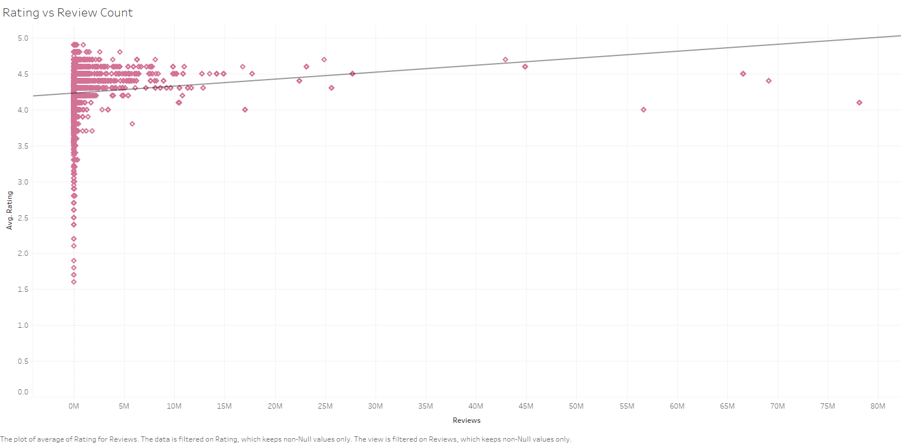

Dataset
I have been using an Android phone for around 5 years now. I had seen the kind of apps that were developed on the Google Play Store and I had somehow built a notion that not a lot of useful apps are out in the market these days, majority of them cause distractions and do not help us being productive. However I never actually performed a proper research to see if these apps actually help. So, with the aim of understanding what other Android users think about the apps available on the play store, and to check if I could add some new apps on my phone, I am using a Google Play Store Apps dataset. This dataset has user visible details about ~10k apps available on the Google Play Store as of August 2018. It includes 13 attributes, some of which are app genre, ratings, reviews, number of installs, etc. Using this data, some useful insights could be drawn which could help me in understanding what kind of apps I could have on my phone and for the bigger picture, it could help the app makers in planning their business on Android platform.
The only problem with the dataset at hand is that the second file in the dataset which had the review sentiment analysis is not complete. It has details only for half the files, so I am only attempting to get some quantitative feedback
This dataset was generated by Lavanya Gupta, by scraping the Google App Store and is available online at:
Kaggle/google-play-store-apps
Discoveries & Insights
Figure 1
First, I tried making an initial assessment as to what kind of apps occupy a majority of the Android App market. From the bar graph, it is clear that a significant number of apps are usually games - FAMILY category mostly has family games in addition to some other apps. This is followed by TOOLS which include utility apps like Calculator, Smart Remote, Alarm Clock, etc. Categories like EVENTS, COMICS, BEAUTY, etc have the least number of apps. One inference which could be drawn from this is that the more specific a category goes, fewer are the number of apps designed. Having said that, I could have grouped some categories, but doing that would be ignoring the categories that are actually out there on Google Play Store using which apps are either retrieved during a search, or analysed in tasks like this one. But to simplify the analysis in this case, I grouped relevant genres together
Figure 2
This further clarifies the answer to my first question - majority of the apps are for entertainment and utility purposes, while fewer apps exist for arts and reading which look like categories where not a lot of innovation can be brought about in terms of designing apps.
Figure 3
Next I looked at the average rating of apps for the grouped genres to answer my third question. It looks like all categories have similar ratings of ~4/5 stars, meaning the respective users are on an average satisfied with the apps. This did not reveal much, so I started on my second question.
Figure 4
I also wanted to understand if there are some obvious factors which affect or at least are correlated with the user ratings of the apps. Of the available attributes, I first checked for some technical factors. Here I check for correlation between the app size and the app rating. A p value less than 0.0001 and r^2 value of 0.0104 hints that although we do have a lot of data to speculate on this, there isn't really a lot of correlation between the two attributes. Given the fact that smartphones come with a decent amount of storage space these days, app size does not seem like an issue for users looking to download an app on their phone.
Figure 5
A comparison of ratings vs minimum android version supported by the app gives a p value of 0.6 and r^2 value of 0.0006 which hints that neither do we have a lot of data to speculate on this, nor is there any correlation between the two attributes. Usually apps, which maintain a good legacy support tend to get heavy on computation or slow on processing. Here it looks like even that did not affect the ratings for an app. This might hint towards two things - a good modular design of the anrdoid platform for app development, which allows for upgrades without affecting legacy features significantly; and better smartphone hardware in general.
Figure 6
Comparing ratings for an app vs the year in which it was last updated does show some correlation which is also statistically significant, with a p value of 0.0003 and r^2 value of 0.06. From this, I get some backing to my notion that over the years, the quality of apps or the updates that are being shipped has not impressed the users much.
Figure 7
Now, moving on from the technical factors to human factors, here is a plot of ratings vs minimum number of installs for an app. The plot does show some correlation with a p value of 0.002 and r^2 value of 0.023. Users will rate an app only after they install it. If the rating is high, it will attract more users, while if the rating is low, users will not install the app. So a positive correlation is expected

Figure 8
Next I compared the ratings for an app with the number of reviews for the app. This helps in knowing if the most critiqued apps are also the most highly rated apps. It turns out, there is a little bit of correlation between the two with a p value of less than 0.0001 and r^2 value of 0.009.
Figure 9
I also looked for average rating for every content rating. Content rating can be mapped, at least loosely, if not perfectly, to a user group or demographic group divided by age. It turned out that users of all age groups were pretty much content with the apps that they were using. Unrated apps and Adult 18+ apps were excluded as there were very only a couple of such apps for each category. A color coding was used for the content rating to convey the order of restriction.
This series of questions helped me answer my second question.
Figure 10
Before I could attempt answering my third question, I decided to verify if the rating metric can be directly used to gauge popularity of an app. As shown in Figure 10, some app genres do have a very good rating, but only a few reviews. A good average rating by a huge number of users would make an app more credible than a good average rating by only a handful of users. Usually, one would expect a user, who came all the way to review an app, to also rate it as it is easier to do so. So, the number of reviews can be thought of as equivalent to the number of users who rated the app. Based on this line of thought, I created a new 'Better Rating' metric = Rating * Review count, which might possibly not be an accurate metric of popularity, but is surely a better indicator of it than before. Following is a plot of the better metric for the grouped genres.

Figure 11
Comparing Figure 11 with Figure 3, now we see a clear distinction emerging between a more popular and a less popular app genre. Also, I have applied a filter to remove content ratings Unrated, Adult 18+ and Everyone. The first two were removed on account of low sample count, while the last was removed so as to ensure that I am restricting my user group to a slightly experienced, and hopefully mature audience and not juvenile users.
From this it is clear that apps for socializing are the most popular apps which one could say has been the most primitive objective for using a phone - connectivity. The second ranked category of entertainment tells us that the upgradation of a simple phone to a smartphone was successful in that it could also entertain its users.
Interstingly, the least popular apps fall in the health category and the work/productivity category. It is common knowledge these days that smartphone radiations, are harmful for health which kind of supports the metaphor that smartphone apps for monitoring health is not much preferred - how could a device which is inherently known to affect our health, be used to help improve our health? Also, the second last genre turned out to be work/productivity, which possibly implies that smartphones could actually be a distraction when it comes to productivity.
Summary
Overall, I would say that I was able to answer my analysis questions from the task. I could get a rough idea of which topics or genres have more number of apps available. I could also verify my baseless notions of whether the quality of apps on google play store, as perceived by its users, has really been declining. I also figured out some possible factors which could help us understand if a certain app is well received by the audience - technical factors like app size, minimum android version did not have a significant correlation with its rating, while some human factors like, number of reviews and number of installs had a little correlation, the user demography ranked by age had no correlation with the app ratings. Finally, I was hopefully able to put forth a better representative picture about the popularity of different app genres and found out that Android apps are mostly popular for communication and entertainment but not much for productivity and health.
Evaluation of Tool
Strengths
STRENGTH 1: Good enough data wrangling options available even for a tool which is primarily meant for visualization only. I was about to write a python script to do some data formatting, like trimming some unneeded characters to be able to cast the attribute as a quantitative value. Luckily one of my friends informed me about Tableau's features which allowed me to do the same in quick time. Plus it also had a little dictionary of Tableau's data formatting functions, so I did not have to google a lot of things.
STRENGTH 2: Joins in-house - I was planning to include one more relation in my analysis for which I needed to perform a join with my main relation. The moment I imported the new relation in Tableau, I was presented with a variety of possible joins I could perform between the two tables. Although, I ended up not using anything from the second table in my analysis, I did use the in-house join operation.
STRENGTH 3: Auto-generated captions - Thanks to this feature, I did not have to painstakingly remember and worry about what all filters I had applied to the graph. One click and it wrote down all the steps performed to create that graph. Very handy!
Weaknesses
WEAKNESS 1: Dual axis - While creating the side by side bar graph, I had to spend quite some time before I could figure out how to get two axes for the two different attributes I was encoding using bar lengths. On clicking the dual axis option, some new fields popped up in the shelves which were not very clear as to what they do, plus the bars were stacked one behind the other rather than side by side. Show Me tab was able to stack them side by side but removed the dual axis. I would basically call this weakness a learning curve issue for getting used to the UI.
WEAKNESS 2: Unintuitive numbering of generated graphs - Even after renaming the graphs as and when I created them, the tab at the bottom still showed the default name - 'Sheet x', which causes even more confusion when we need to shuffle the sequence of graphs.
WEAKNESS 3: SVG! - Tableau still does not have SVG support for exporting graphs. As a result, many of the graphs in this report might look pixelated with no automatic scaling possible to make the marks or the text readable.
Evaluation Summary and Discussion
I had my first, first hand experience of performing data analysis and it was fun. For a newbie like me, getting to the analysis part without going through the grind of creating all those visualizations was a good experience, thanks to Tableau and the entire visualization research community for making my life easier! Having said that, there are still a few things which could make Tableau even better, some of which have been discussed above. Overall, I think I enjoyed the task.